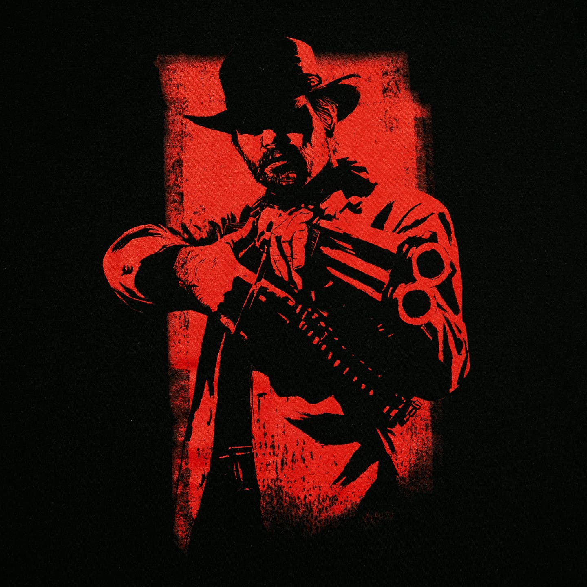

Main
Contato

Uma história de faroeste sobre lealdade, culpa e o fim de uma era.
Red Dead Redemption 2 é um jogo de ação e aventura em mundo aberto, desenvolvido e publicado pela Rockstar Games. Ele foi lançado em 26 de outubro de 2018 para PlayStation 4 e Xbox One, e chegou ao PC em novembro de 2019.
É um prequel de Red Dead Redemption (2010) e conta o que aconteceu antes dos eventos do primeiro jogo.
Em 1899, o Velho Oeste está chegando ao fim. A lei avança, as cidades crescem e os fora-da-lei têm cada vez menos espaço. Arthur Morgan é um dos principais membros da gangue Van der Linde, liderada por Dutch van der Linde, que o criou desde jovem.
Depois de um assalto em Blackwater que dá muito errado, a gangue precisa abandonar o acampamento e fugir para as montanhas. Sem dinheiro, perseguidos por agentes da lei e caçadores de recompensas, eles passam a se mudar de região em região, tentando juntar dinheiro para sumir de vez.
Ao longo da fuga, Arthur começa a duvidar das decisões de Dutch. Os planos ficam cada vez mais arriscados, a confiança dentro do grupo se desgasta e surgem conflitos entre os integrantes. Arthur precisa escolher entre continuar leal à gangue e fazer o que acredita ser certo.
Pelo caminho, ele também passa a refletir sobre a própria vida, sobre os erros que cometeu e sobre o que quer deixar para trás. As escolhas do jogador influenciam a forma como Arthur encara essa jornada e como ela termina.
O mapa reúne cinco regiões fictícias, que vão de montanhas nevadas a pântanos e cidades grandes: Ambarino, New Hanover, Lemoyne, West Elizabeth e New Austin.